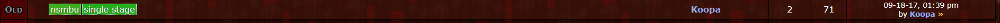
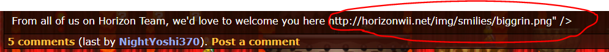

While you're at it, add this line above the link of the Youtube video. (Click Quote to view the text)
Make sure not to get rid of the link though. _________________________
I need to make a signature...
It all starts like this. Ganon captured Link. Then Zelda found out that the triforce had 4 pieces. not 3. She went to the triforce and threw the 3rd shard (that is black) at it. the shard went in the middle. Then she punched it for its power and then there was a gigantic explosion. Everyone died but zelda and ganon and link. Ganon and Link started fighting. Athend, Ganon hit link to the ground. Ganon was about to end it when captain falcon came out of somewhere i mean nowhere and used falcon punch. Then he exploded and died. Zelda said "wow Link sucks." Link heard, got pissed, Transformed into Dark Link and exploded. Ganon was so shocked he died out of laughter. zelda almost had the same fate but the triforce which is now black and Purple aura copied Zelda's apperance and then gained 4 heads and a dragon tail. Its name is dragon zelda. zelda acted like she was all and powerful. dragon zelda charged at zelda and she hit the floor. She started crying alot. then toon link and young link came out of nowhere i mean somewhere and went beside zelda. they screamed "AHHHHHH!!!" and exploded. then they reformed to a toon female link with pink hair. fink. fink acted like she was all and powerful. but then dragon zelda charged at fink and she hit the floor. this time she was actually dead. Now everyone was dead but dragon zelda. Now she turns into a shiek with a bigger dragon tail. she teleported to a dimension with everything normal. because she can. then she looked for zelda. she found her, killed her instanly and became the new zelda.
Changelog:
* Added animations rendering for ? blocks, brick blocks, dash coins and conveyors
* Fixed last level loading
* Fixed Newer/NewerSumSun sprite images
* Reggie now warns the user if the LH-compressed file couldn't be decompressed
* Added the Quick Paint Tool
* Added a Recent Files menu
* Fixed Pipe Enemy Generator sprite image
* Minor bug fixes
Alright, I think I've got everything! Let me know if I've missed something _________________________
I need to make a signature...
It all starts like this. Ganon captured Link. Then Zelda found out that the triforce had 4 pieces. not 3. She went to the triforce and threw the 3rd shard (that is black) at it. the shard went in the middle. Then she punched it for its power and then there was a gigantic explosion. Everyone died but zelda and ganon and link. Ganon and Link started fighting. Athend, Ganon hit link to the ground. Ganon was about to end it when captain falcon came out of somewhere i mean nowhere and used falcon punch. Then he exploded and died. Zelda said "wow Link sucks." Link heard, got pissed, Transformed into Dark Link and exploded. Ganon was so shocked he died out of laughter. zelda almost had the same fate but the triforce which is now black and Purple aura copied Zelda's apperance and then gained 4 heads and a dragon tail. Its name is dragon zelda. zelda acted like she was all and powerful. dragon zelda charged at zelda and she hit the floor. She started crying alot. then toon link and young link came out of nowhere i mean somewhere and went beside zelda. they screamed "AHHHHHH!!!" and exploded. then they reformed to a toon female link with pink hair. fink. fink acted like she was all and powerful. but then dragon zelda charged at fink and she hit the floor. this time she was actually dead. Now everyone was dead but dragon zelda. Now she turns into a shiek with a bigger dragon tail. she teleported to a dimension with everything normal. because she can. then she looked for zelda. she found her, killed her instanly and became the new zelda.
It all starts like this. Ganon captured Link. Then Zelda found out that the triforce had 4 pieces. not 3. She went to the triforce and threw the 3rd shard (that is black) at it. the shard went in the middle. Then she punched it for its power and then there was a gigantic explosion. Everyone died but zelda and ganon and link. Ganon and Link started fighting. Athend, Ganon hit link to the ground. Ganon was about to end it when captain falcon came out of somewhere i mean nowhere and used falcon punch. Then he exploded and died. Zelda said "wow Link sucks." Link heard, got pissed, Transformed into Dark Link and exploded. Ganon was so shocked he died out of laughter. zelda almost had the same fate but the triforce which is now black and Purple aura copied Zelda's apperance and then gained 4 heads and a dragon tail. Its name is dragon zelda. zelda acted like she was all and powerful. dragon zelda charged at zelda and she hit the floor. She started crying alot. then toon link and young link came out of nowhere i mean somewhere and went beside zelda. they screamed "AHHHHHH!!!" and exploded. then they reformed to a toon female link with pink hair. fink. fink acted like she was all and powerful. but then dragon zelda charged at fink and she hit the floor. this time she was actually dead. Now everyone was dead but dragon zelda. Now she turns into a shiek with a bigger dragon tail. she teleported to a dimension with everything normal. because she can. then she looked for zelda. she found her, killed her instanly and became the new zelda.
Yeah, I have server access, because I'm the owner of the server.
If you need proof, I can directly prove it.
No need. I can confirm what he is saying is true. We talk about this on Discord time to time. _________________________
I need to make a signature...
It all starts like this. Ganon captured Link. Then Zelda found out that the triforce had 4 pieces. not 3. She went to the triforce and threw the 3rd shard (that is black) at it. the shard went in the middle. Then she punched it for its power and then there was a gigantic explosion. Everyone died but zelda and ganon and link. Ganon and Link started fighting. Athend, Ganon hit link to the ground. Ganon was about to end it when captain falcon came out of somewhere i mean nowhere and used falcon punch. Then he exploded and died. Zelda said "wow Link sucks." Link heard, got pissed, Transformed into Dark Link and exploded. Ganon was so shocked he died out of laughter. zelda almost had the same fate but the triforce which is now black and Purple aura copied Zelda's apperance and then gained 4 heads and a dragon tail. Its name is dragon zelda. zelda acted like she was all and powerful. dragon zelda charged at zelda and she hit the floor. She started crying alot. then toon link and young link came out of nowhere i mean somewhere and went beside zelda. they screamed "AHHHHHH!!!" and exploded. then they reformed to a toon female link with pink hair. fink. fink acted like she was all and powerful. but then dragon zelda charged at fink and she hit the floor. this time she was actually dead. Now everyone was dead but dragon zelda. Now she turns into a shiek with a bigger dragon tail. she teleported to a dimension with everything normal. because she can. then she looked for zelda. she found her, killed her instanly and became the new zelda.
Wait, Yoshi's Island's name is hardcoded?! Uh, mind adding that to the main post? _________________________
I need to make a signature...
It all starts like this. Ganon captured Link. Then Zelda found out that the triforce had 4 pieces. not 3. She went to the triforce and threw the 3rd shard (that is black) at it. the shard went in the middle. Then she punched it for its power and then there was a gigantic explosion. Everyone died but zelda and ganon and link. Ganon and Link started fighting. Athend, Ganon hit link to the ground. Ganon was about to end it when captain falcon came out of somewhere i mean nowhere and used falcon punch. Then he exploded and died. Zelda said "wow Link sucks." Link heard, got pissed, Transformed into Dark Link and exploded. Ganon was so shocked he died out of laughter. zelda almost had the same fate but the triforce which is now black and Purple aura copied Zelda's apperance and then gained 4 heads and a dragon tail. Its name is dragon zelda. zelda acted like she was all and powerful. dragon zelda charged at zelda and she hit the floor. She started crying alot. then toon link and young link came out of nowhere i mean somewhere and went beside zelda. they screamed "AHHHHHH!!!" and exploded. then they reformed to a toon female link with pink hair. fink. fink acted like she was all and powerful. but then dragon zelda charged at fink and she hit the floor. this time she was actually dead. Now everyone was dead but dragon zelda. Now she turns into a shiek with a bigger dragon tail. she teleported to a dimension with everything normal. because she can. then she looked for zelda. she found her, killed her instanly and became the new zelda.
Great tutorial! Though, how do you remove objects in Wart? _________________________
I need to make a signature...
It all starts like this. Ganon captured Link. Then Zelda found out that the triforce had 4 pieces. not 3. She went to the triforce and threw the 3rd shard (that is black) at it. the shard went in the middle. Then she punched it for its power and then there was a gigantic explosion. Everyone died but zelda and ganon and link. Ganon and Link started fighting. Athend, Ganon hit link to the ground. Ganon was about to end it when captain falcon came out of somewhere i mean nowhere and used falcon punch. Then he exploded and died. Zelda said "wow Link sucks." Link heard, got pissed, Transformed into Dark Link and exploded. Ganon was so shocked he died out of laughter. zelda almost had the same fate but the triforce which is now black and Purple aura copied Zelda's apperance and then gained 4 heads and a dragon tail. Its name is dragon zelda. zelda acted like she was all and powerful. dragon zelda charged at zelda and she hit the floor. She started crying alot. then toon link and young link came out of nowhere i mean somewhere and went beside zelda. they screamed "AHHHHHH!!!" and exploded. then they reformed to a toon female link with pink hair. fink. fink acted like she was all and powerful. but then dragon zelda charged at fink and she hit the floor. this time she was actually dead. Now everyone was dead but dragon zelda. Now she turns into a shiek with a bigger dragon tail. she teleported to a dimension with everything normal. because she can. then she looked for zelda. she found her, killed her instanly and became the new zelda.
Here's the current version of Jigsaw Puzzle! There are two versions, the source code, and the released version.
The source code is often the most up-to-date version.
- Tileset Zoom (maybe default to 125-150% would be an idea)
- Copy tiles and their Hex data between instances, Ctrl-click to copy multiple tiles
- Drag-and-drop tiles around. Or, possibility to copy or cut tiles and their hex data and paste into any other tile
- The Core/Terrain/Parameters box and the Properties box moves around and resizes when hovering over tiles
- The left-click and right-click handler functions always confuse me. It also depends, if "Default" is selected or not. When I start Puzzle, nothing is selected, not even "Default".
My idea would be to change this behavior completely:
-> Left-click selects the tile and shows the corresponding Core/Terrain/Parameters/Properties values. The tile can now also be used to create objects.
-> If one tile or multiple tiles are selected (with Ctrl-left-click as is already possible), then the tile "Behaviors" can be set and I recommend having an "Apply" button to save the changes.
The Behaviors box could also reflect the settings of the currently selected tile, which would make it easier to modify existing tiles.
Example: we left-click on the "Invisible solid-on-top tile" from Pa0_jyotyu.arc. On the right side in the Behaviors box, "Pass-through" and "Partial Block - Top Half" is automatically selected. If we don't change anything and click on Apply, the tile is unaltered. Lets' say we want to create an "invisible solid-on-bottom tile" then we would leave the "Pass-through" unchanged and only change the "Partial Block" to "Bottom Half".
-> Right-click opens the context menu and allows to copy/cut/paste, or drag.
- Get rid of the tabs and move the Objects frame to the main page, place it at the bottom.
-> Top left frame: Tile settings and Tileset Map
-> Top right frame: Behaviors
-> Bottom frame: Objects
Finally, here's a little list of reported bugs of previous, or current versions!
-None reported yet.
_________________________
I need to make a signature...
It all starts like this. Ganon captured Link. Then Zelda found out that the triforce had 4 pieces. not 3. She went to the triforce and threw the 3rd shard (that is black) at it. the shard went in the middle. Then she punched it for its power and then there was a gigantic explosion. Everyone died but zelda and ganon and link. Ganon and Link started fighting. Athend, Ganon hit link to the ground. Ganon was about to end it when captain falcon came out of somewhere i mean nowhere and used falcon punch. Then he exploded and died. Zelda said "wow Link sucks." Link heard, got pissed, Transformed into Dark Link and exploded. Ganon was so shocked he died out of laughter. zelda almost had the same fate but the triforce which is now black and Purple aura copied Zelda's apperance and then gained 4 heads and a dragon tail. Its name is dragon zelda. zelda acted like she was all and powerful. dragon zelda charged at zelda and she hit the floor. She started crying alot. then toon link and young link came out of nowhere i mean somewhere and went beside zelda. they screamed "AHHHHHH!!!" and exploded. then they reformed to a toon female link with pink hair. fink. fink acted like she was all and powerful. but then dragon zelda charged at fink and she hit the floor. this time she was actually dead. Now everyone was dead but dragon zelda. Now she turns into a shiek with a bigger dragon tail. she teleported to a dimension with everything normal. because she can. then she looked for zelda. she found her, killed her instanly and became the new zelda.
Sorry for the big bump, but I don't know if this is sort of necessary, but you might want to add the Jigsaw Puzzle Tileset Editor to the list.
Oh, right. Thanks for the reminder! _________________________
I need to make a signature...
It all starts like this. Ganon captured Link. Then Zelda found out that the triforce had 4 pieces. not 3. She went to the triforce and threw the 3rd shard (that is black) at it. the shard went in the middle. Then she punched it for its power and then there was a gigantic explosion. Everyone died but zelda and ganon and link. Ganon and Link started fighting. Athend, Ganon hit link to the ground. Ganon was about to end it when captain falcon came out of somewhere i mean nowhere and used falcon punch. Then he exploded and died. Zelda said "wow Link sucks." Link heard, got pissed, Transformed into Dark Link and exploded. Ganon was so shocked he died out of laughter. zelda almost had the same fate but the triforce which is now black and Purple aura copied Zelda's apperance and then gained 4 heads and a dragon tail. Its name is dragon zelda. zelda acted like she was all and powerful. dragon zelda charged at zelda and she hit the floor. She started crying alot. then toon link and young link came out of nowhere i mean somewhere and went beside zelda. they screamed "AHHHHHH!!!" and exploded. then they reformed to a toon female link with pink hair. fink. fink acted like she was all and powerful. but then dragon zelda charged at fink and she hit the floor. this time she was actually dead. Now everyone was dead but dragon zelda. Now she turns into a shiek with a bigger dragon tail. she teleported to a dimension with everything normal. because she can. then she looked for zelda. she found her, killed her instanly and became the new zelda.
Yeah. Also, the other Halloween courses. _________________________
I need to make a signature...
It all starts like this. Ganon captured Link. Then Zelda found out that the triforce had 4 pieces. not 3. She went to the triforce and threw the 3rd shard (that is black) at it. the shard went in the middle. Then she punched it for its power and then there was a gigantic explosion. Everyone died but zelda and ganon and link. Ganon and Link started fighting. Athend, Ganon hit link to the ground. Ganon was about to end it when captain falcon came out of somewhere i mean nowhere and used falcon punch. Then he exploded and died. Zelda said "wow Link sucks." Link heard, got pissed, Transformed into Dark Link and exploded. Ganon was so shocked he died out of laughter. zelda almost had the same fate but the triforce which is now black and Purple aura copied Zelda's apperance and then gained 4 heads and a dragon tail. Its name is dragon zelda. zelda acted like she was all and powerful. dragon zelda charged at zelda and she hit the floor. She started crying alot. then toon link and young link came out of nowhere i mean somewhere and went beside zelda. they screamed "AHHHHHH!!!" and exploded. then they reformed to a toon female link with pink hair. fink. fink acted like she was all and powerful. but then dragon zelda charged at fink and she hit the floor. this time she was actually dead. Now everyone was dead but dragon zelda. Now she turns into a shiek with a bigger dragon tail. she teleported to a dimension with everything normal. because she can. then she looked for zelda. she found her, killed her instanly and became the new zelda.
Ah, nice to see you're updating Puzzle!! Great work so far, it runs as stable as the old version.
Well it was inevitable, so here are my ideas.
- Tileset Zoom (maybe default to 125-150% would be an idea)
- Copy tiles and their Hex data between instances, Ctrl-click to copy multiple tiles
- Drag-and-drop tiles around. Or, possibility to copy or cut tiles and their hex data and paste into any other tile
- The Core/Terrain/Parameters box and the Properties box moves around and resizes when hovering over tiles
- The left-click and right-click handler functions always confuse me. It also depends, if "Default" is selected or not. When I start Puzzle, nothing is selected, not even "Default".
My idea would be to change this behavior completely:
-> Left-click selects the tile and shows the corresponding Core/Terrain/Parameters/Properties values. The tile can now also be used to create objects.
-> If one tile or multiple tiles are selected (with Ctrl-left-click as is already possible), then the tile "Behaviors" can be set and I recommend having an "Apply" button to save the changes.
The Behaviors box could also reflect the settings of the currently selected tile, which would make it easier to modify existing tiles.
Example: we left-click on the "Invisible solid-on-top tile" from Pa0_jyotyu.arc. On the right side in the Behaviors box, "Pass-through" and "Partial Block - Top Half" is automatically selected. If we don't change anything and click on Apply, the tile is unaltered. Lets' say we want to create an "invisible solid-on-bottom tile" then we would leave the "Pass-through" unchanged and only change the "Partial Block" to "Bottom Half".
-> Right-click opens the context menu and allows to copy/cut/paste, or drag.
- Get rid of the tabs and move the Objects frame to the main page, place it at the bottom.
-> Top left frame: Tile settings and Tileset Map
-> Top right frame: Behaviors
-> Bottom frame: Objects
Oh hey, I like these ideas! Added to the thread! _________________________
I need to make a signature...
It all starts like this. Ganon captured Link. Then Zelda found out that the triforce had 4 pieces. not 3. She went to the triforce and threw the 3rd shard (that is black) at it. the shard went in the middle. Then she punched it for its power and then there was a gigantic explosion. Everyone died but zelda and ganon and link. Ganon and Link started fighting. Athend, Ganon hit link to the ground. Ganon was about to end it when captain falcon came out of somewhere i mean nowhere and used falcon punch. Then he exploded and died. Zelda said "wow Link sucks." Link heard, got pissed, Transformed into Dark Link and exploded. Ganon was so shocked he died out of laughter. zelda almost had the same fate but the triforce which is now black and Purple aura copied Zelda's apperance and then gained 4 heads and a dragon tail. Its name is dragon zelda. zelda acted like she was all and powerful. dragon zelda charged at zelda and she hit the floor. She started crying alot. then toon link and young link came out of nowhere i mean somewhere and went beside zelda. they screamed "AHHHHHH!!!" and exploded. then they reformed to a toon female link with pink hair. fink. fink acted like she was all and powerful. but then dragon zelda charged at fink and she hit the floor. this time she was actually dead. Now everyone was dead but dragon zelda. Now she turns into a shiek with a bigger dragon tail. she teleported to a dimension with everything normal. because she can. then she looked for zelda. she found her, killed her instanly and became the new zelda.
I'm Kirisame M, a Touhou fan. I'm not interested in hacking video games but do wish to become part of the active userbase here.
Her Kiri! Welcome! We're more active on the Discord server, but it's still nice for you to join us! _________________________
I need to make a signature...
It all starts like this. Ganon captured Link. Then Zelda found out that the triforce had 4 pieces. not 3. She went to the triforce and threw the 3rd shard (that is black) at it. the shard went in the middle. Then she punched it for its power and then there was a gigantic explosion. Everyone died but zelda and ganon and link. Ganon and Link started fighting. Athend, Ganon hit link to the ground. Ganon was about to end it when captain falcon came out of somewhere i mean nowhere and used falcon punch. Then he exploded and died. Zelda said "wow Link sucks." Link heard, got pissed, Transformed into Dark Link and exploded. Ganon was so shocked he died out of laughter. zelda almost had the same fate but the triforce which is now black and Purple aura copied Zelda's apperance and then gained 4 heads and a dragon tail. Its name is dragon zelda. zelda acted like she was all and powerful. dragon zelda charged at zelda and she hit the floor. She started crying alot. then toon link and young link came out of nowhere i mean somewhere and went beside zelda. they screamed "AHHHHHH!!!" and exploded. then they reformed to a toon female link with pink hair. fink. fink acted like she was all and powerful. but then dragon zelda charged at fink and she hit the floor. this time she was actually dead. Now everyone was dead but dragon zelda. Now she turns into a shiek with a bigger dragon tail. she teleported to a dimension with everything normal. because she can. then she looked for zelda. she found her, killed her instanly and became the new zelda.
Thanks guys! And good job to Hueysin for being the runner up, and Chickensaver for mixing things up! _________________________
I need to make a signature...
It all starts like this. Ganon captured Link. Then Zelda found out that the triforce had 4 pieces. not 3. She went to the triforce and threw the 3rd shard (that is black) at it. the shard went in the middle. Then she punched it for its power and then there was a gigantic explosion. Everyone died but zelda and ganon and link. Ganon and Link started fighting. Athend, Ganon hit link to the ground. Ganon was about to end it when captain falcon came out of somewhere i mean nowhere and used falcon punch. Then he exploded and died. Zelda said "wow Link sucks." Link heard, got pissed, Transformed into Dark Link and exploded. Ganon was so shocked he died out of laughter. zelda almost had the same fate but the triforce which is now black and Purple aura copied Zelda's apperance and then gained 4 heads and a dragon tail. Its name is dragon zelda. zelda acted like she was all and powerful. dragon zelda charged at zelda and she hit the floor. She started crying alot. then toon link and young link came out of nowhere i mean somewhere and went beside zelda. they screamed "AHHHHHH!!!" and exploded. then they reformed to a toon female link with pink hair. fink. fink acted like she was all and powerful. but then dragon zelda charged at fink and she hit the floor. this time she was actually dead. Now everyone was dead but dragon zelda. Now she turns into a shiek with a bigger dragon tail. she teleported to a dimension with everything normal. because she can. then she looked for zelda. she found her, killed her instanly and became the new zelda.
News! A new Bug has been reported from Zementblock on Discord concerning the Invisible Block sprite!
Posted by Zementblock on Discord
The sprite-based invisible ?-block has no image in the latest Reggie version.
On a side note, I came up with an idea that would be really useful for a future build!
Posted by Danster on Discord
You know how when NSMBW's original Pa0_jyotyu tilesets are being used, images from Reggie are loaded to show hidden blocks, and what items are in which box? Well, could you add an option to turn that on or off for any Pa0 tileset?
_________________________
I need to make a signature...
It all starts like this. Ganon captured Link. Then Zelda found out that the triforce had 4 pieces. not 3. She went to the triforce and threw the 3rd shard (that is black) at it. the shard went in the middle. Then she punched it for its power and then there was a gigantic explosion. Everyone died but zelda and ganon and link. Ganon and Link started fighting. Athend, Ganon hit link to the ground. Ganon was about to end it when captain falcon came out of somewhere i mean nowhere and used falcon punch. Then he exploded and died. Zelda said "wow Link sucks." Link heard, got pissed, Transformed into Dark Link and exploded. Ganon was so shocked he died out of laughter. zelda almost had the same fate but the triforce which is now black and Purple aura copied Zelda's apperance and then gained 4 heads and a dragon tail. Its name is dragon zelda. zelda acted like she was all and powerful. dragon zelda charged at zelda and she hit the floor. She started crying alot. then toon link and young link came out of nowhere i mean somewhere and went beside zelda. they screamed "AHHHHHH!!!" and exploded. then they reformed to a toon female link with pink hair. fink. fink acted like she was all and powerful. but then dragon zelda charged at fink and she hit the floor. this time she was actually dead. Now everyone was dead but dragon zelda. Now she turns into a shiek with a bigger dragon tail. she teleported to a dimension with everything normal. because she can. then she looked for zelda. she found her, killed her instanly and became the new zelda.
Will you also have that option (to show hidden images/etc. from Reggie!) available for any Pa1/Pa2/Pa3 tilesets, too (and not just any Pa0 tilesets alone)?
It would be useful in some cases (e.g. if you renamed the Pa3_rail.arc or Pa3_rail_white.arc tileset to a different name), to show the hidden images of the tileset (which, if you're using the Pa3_rail.arc or Pa3_rail_white.arc tileset; are overlays for correct usage).
Oh, yes! That will be added too. Right now, the lead coder is busy with school, and will
probably add these things in on the holidays. So, now quite yet.
Also, added another idea to the list of my ideas at the top, concerning the Comments tool. _________________________
I need to make a signature...
It all starts like this. Ganon captured Link. Then Zelda found out that the triforce had 4 pieces. not 3. She went to the triforce and threw the 3rd shard (that is black) at it. the shard went in the middle. Then she punched it for its power and then there was a gigantic explosion. Everyone died but zelda and ganon and link. Ganon and Link started fighting. Athend, Ganon hit link to the ground. Ganon was about to end it when captain falcon came out of somewhere i mean nowhere and used falcon punch. Then he exploded and died. Zelda said "wow Link sucks." Link heard, got pissed, Transformed into Dark Link and exploded. Ganon was so shocked he died out of laughter. zelda almost had the same fate but the triforce which is now black and Purple aura copied Zelda's apperance and then gained 4 heads and a dragon tail. Its name is dragon zelda. zelda acted like she was all and powerful. dragon zelda charged at zelda and she hit the floor. She started crying alot. then toon link and young link came out of nowhere i mean somewhere and went beside zelda. they screamed "AHHHHHH!!!" and exploded. then they reformed to a toon female link with pink hair. fink. fink acted like she was all and powerful. but then dragon zelda charged at fink and she hit the floor. this time she was actually dead. Now everyone was dead but dragon zelda. Now she turns into a shiek with a bigger dragon tail. she teleported to a dimension with everything normal. because she can. then she looked for zelda. she found her, killed her instanly and became the new zelda.
Cool mod, but it's only playable through Dolphin. That's a problem
...So I'll make a Riivolution build of this in a moment _________________________
I need to make a signature...
It all starts like this. Ganon captured Link. Then Zelda found out that the triforce had 4 pieces. not 3. She went to the triforce and threw the 3rd shard (that is black) at it. the shard went in the middle. Then she punched it for its power and then there was a gigantic explosion. Everyone died but zelda and ganon and link. Ganon and Link started fighting. Athend, Ganon hit link to the ground. Ganon was about to end it when captain falcon came out of somewhere i mean nowhere and used falcon punch. Then he exploded and died. Zelda said "wow Link sucks." Link heard, got pissed, Transformed into Dark Link and exploded. Ganon was so shocked he died out of laughter. zelda almost had the same fate but the triforce which is now black and Purple aura copied Zelda's apperance and then gained 4 heads and a dragon tail. Its name is dragon zelda. zelda acted like she was all and powerful. dragon zelda charged at zelda and she hit the floor. She started crying alot. then toon link and young link came out of nowhere i mean somewhere and went beside zelda. they screamed "AHHHHHH!!!" and exploded. then they reformed to a toon female link with pink hair. fink. fink acted like she was all and powerful. but then dragon zelda charged at fink and she hit the floor. this time she was actually dead. Now everyone was dead but dragon zelda. Now she turns into a shiek with a bigger dragon tail. she teleported to a dimension with everything normal. because she can. then she looked for zelda. she found her, killed her instanly and became the new zelda.
Alright Fruit. After changing the board quite a bit, you have unconsciously dispersed a few more bugs throughout the board.
The first problem isn't a bug at all, you just forgot to delete a thread that is useless now as the level was moved.

This post is in Horizon/Forums/General Rom Hacking.
Next, though you probably know this, cosmetics don't work anymore.
The third problem is that smilies do not work

That example was taken from the bottom of the home page.
Lastly, Vadelma can't seem to log in from their phone, but they can log in from their computer. It would make sense for this problem to be on your end, but it might not be.
Yeah, saw those too. And, can you put those images in a Spoiler?! _________________________
I need to make a signature...
It all starts like this. Ganon captured Link. Then Zelda found out that the triforce had 4 pieces. not 3. She went to the triforce and threw the 3rd shard (that is black) at it. the shard went in the middle. Then she punched it for its power and then there was a gigantic explosion. Everyone died but zelda and ganon and link. Ganon and Link started fighting. Athend, Ganon hit link to the ground. Ganon was about to end it when captain falcon came out of somewhere i mean nowhere and used falcon punch. Then he exploded and died. Zelda said "wow Link sucks." Link heard, got pissed, Transformed into Dark Link and exploded. Ganon was so shocked he died out of laughter. zelda almost had the same fate but the triforce which is now black and Purple aura copied Zelda's apperance and then gained 4 heads and a dragon tail. Its name is dragon zelda. zelda acted like she was all and powerful. dragon zelda charged at zelda and she hit the floor. She started crying alot. then toon link and young link came out of nowhere i mean somewhere and went beside zelda. they screamed "AHHHHHH!!!" and exploded. then they reformed to a toon female link with pink hair. fink. fink acted like she was all and powerful. but then dragon zelda charged at fink and she hit the floor. this time she was actually dead. Now everyone was dead but dragon zelda. Now she turns into a shiek with a bigger dragon tail. she teleported to a dimension with everything normal. because she can. then she looked for zelda. she found her, killed her instanly and became the new zelda.
Ah, that. Not sure what happened there. Added that to the Bug Report list.
For now, I suggest turning off sprite images when dealing with those blocks _________________________
I need to make a signature...
It all starts like this. Ganon captured Link. Then Zelda found out that the triforce had 4 pieces. not 3. She went to the triforce and threw the 3rd shard (that is black) at it. the shard went in the middle. Then she punched it for its power and then there was a gigantic explosion. Everyone died but zelda and ganon and link. Ganon and Link started fighting. Athend, Ganon hit link to the ground. Ganon was about to end it when captain falcon came out of somewhere i mean nowhere and used falcon punch. Then he exploded and died. Zelda said "wow Link sucks." Link heard, got pissed, Transformed into Dark Link and exploded. Ganon was so shocked he died out of laughter. zelda almost had the same fate but the triforce which is now black and Purple aura copied Zelda's apperance and then gained 4 heads and a dragon tail. Its name is dragon zelda. zelda acted like she was all and powerful. dragon zelda charged at zelda and she hit the floor. She started crying alot. then toon link and young link came out of nowhere i mean somewhere and went beside zelda. they screamed "AHHHHHH!!!" and exploded. then they reformed to a toon female link with pink hair. fink. fink acted like she was all and powerful. but then dragon zelda charged at fink and she hit the floor. this time she was actually dead. Now everyone was dead but dragon zelda. Now she turns into a shiek with a bigger dragon tail. she teleported to a dimension with everything normal. because she can. then she looked for zelda. she found her, killed her instanly and became the new zelda.
That should be pretty useful, actually! I'll see if we can add it into Reggie! Next M3 somehow in the future _________________________
I need to make a signature...
It all starts like this. Ganon captured Link. Then Zelda found out that the triforce had 4 pieces. not 3. She went to the triforce and threw the 3rd shard (that is black) at it. the shard went in the middle. Then she punched it for its power and then there was a gigantic explosion. Everyone died but zelda and ganon and link. Ganon and Link started fighting. Athend, Ganon hit link to the ground. Ganon was about to end it when captain falcon came out of somewhere i mean nowhere and used falcon punch. Then he exploded and died. Zelda said "wow Link sucks." Link heard, got pissed, Transformed into Dark Link and exploded. Ganon was so shocked he died out of laughter. zelda almost had the same fate but the triforce which is now black and Purple aura copied Zelda's apperance and then gained 4 heads and a dragon tail. Its name is dragon zelda. zelda acted like she was all and powerful. dragon zelda charged at zelda and she hit the floor. She started crying alot. then toon link and young link came out of nowhere i mean somewhere and went beside zelda. they screamed "AHHHHHH!!!" and exploded. then they reformed to a toon female link with pink hair. fink. fink acted like she was all and powerful. but then dragon zelda charged at fink and she hit the floor. this time she was actually dead. Now everyone was dead but dragon zelda. Now she turns into a shiek with a bigger dragon tail. she teleported to a dimension with everything normal. because she can. then she looked for zelda. she found her, killed her instanly and became the new zelda.
It all starts like this. Ganon captured Link. Then Zelda found out that the triforce had 4 pieces. not 3. She went to the triforce and threw the 3rd shard (that is black) at it. the shard went in the middle. Then she punched it for its power and then there was a gigantic explosion. Everyone died but zelda and ganon and link. Ganon and Link started fighting. Athend, Ganon hit link to the ground. Ganon was about to end it when captain falcon came out of somewhere i mean nowhere and used falcon punch. Then he exploded and died. Zelda said "wow Link sucks." Link heard, got pissed, Transformed into Dark Link and exploded. Ganon was so shocked he died out of laughter. zelda almost had the same fate but the triforce which is now black and Purple aura copied Zelda's apperance and then gained 4 heads and a dragon tail. Its name is dragon zelda. zelda acted like she was all and powerful. dragon zelda charged at zelda and she hit the floor. She started crying alot. then toon link and young link came out of nowhere i mean somewhere and went beside zelda. they screamed "AHHHHHH!!!" and exploded. then they reformed to a toon female link with pink hair. fink. fink acted like she was all and powerful. but then dragon zelda charged at fink and she hit the floor. this time she was actually dead. Now everyone was dead but dragon zelda. Now she turns into a shiek with a bigger dragon tail. she teleported to a dimension with everything normal. because she can. then she looked for zelda. she found her, killed her instanly and became the new zelda.